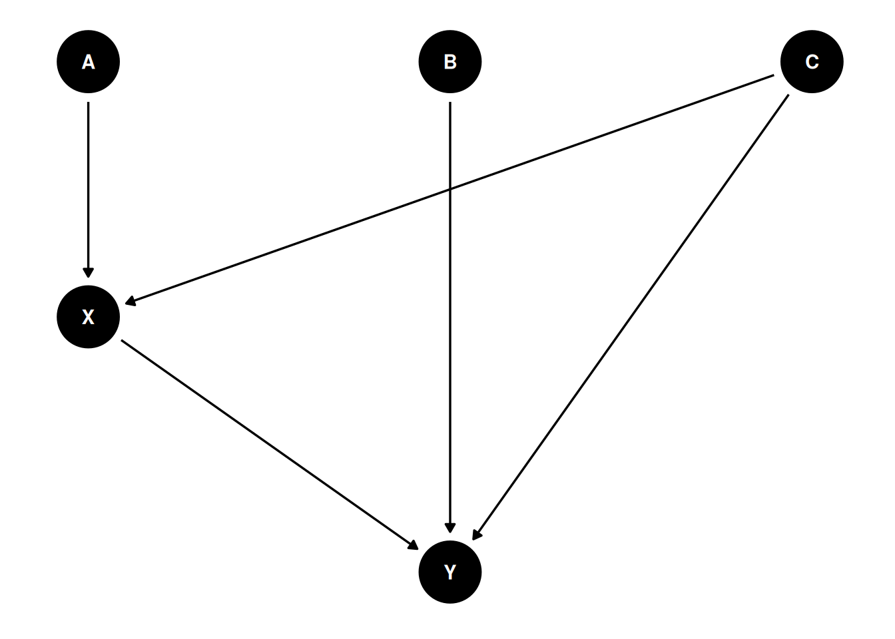

Lecture 01 Notes
Directed acyclic graphs
Statistical models process data but to provide insight, we require scientific models. Causes of data cannot be extracted alone using a statistical model, we need causal models.
Causal inference is the prediction of intervention and imputation of missing observations.
Causal prediction: knowing a cause means being able to predict the consequences of an intervention. Causal imputation: knowing a cause means being able to construct unobserved counterfactual outcomes.
- X is a treatment
- Y is an outcome
- B is a competing cause of Y
- A is an influence of the treatment X
- C is a common cause of X and Y (a confound)
Relationships between all variables can impact outcomes.
Note
At one moment in time, DAGs are unidirectional. With a time series, you can have reciprocal relationships.
DAGs are not specific to one model and therefore can be used for different queries and related models. These different models should not necessarily include all variables, and DAGs help us determine good and bad controls for each question. DAGs are logically specific and can be used to test and refine the causal model.
Note
How do we justify controls in eg. the relationship between X and Y?
- We need a DAG
- then we analyse it to determine the adjustment set
Golems
Statistical models are powerful but dangerous and have no wisdom or foresight. Flowcharts of tests that are isolated for specific uses are not intuitive or appropriate for research science. Null hypothesis rejection is not appropriate, feasible or ethical in many contexts.
Reflect
What are other process models that are consistent with this same fact?
Owls
Emphasis on documenting and testing code, using a respectable workflow
- Theoretical estimand
- Scientific (causal) model
- Use the theoretical estimand and the scientific model to build a statistical model
- Simulate from the scientific model to validate that the statistical model yields the theoretical estimand
- Analyse the real data